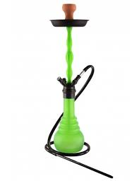

Kaya SPN 480 Green Neon
Esta cachimba tiene una buena calidad teniendo en cuenta que tiene un precio bajo.
Si eres principiante en
este tema este modelo para emepzar es muy recomendable.

DESCRIPCIÓN
- Es un producto el cual no lleva mucho en el mercado pero aun asi es consiederada de muy
buena calidad.
- Tiene una altura de 48cm.
- Las roscas son resistentes al agua.
PRECIO
48,99€